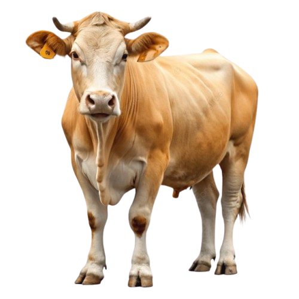

Tinahls Triad Agro (TTA) delivers practical and theoretical training, farm consultancy, and modern solutions that improve productivity and profitability across Namibia.

From training and consultancy to inputs and record-keeping — everything you need to farm smarter and more profitably.
Practical and theoretical workshops in livestock and crop production for farmers and students.
Planning, profitability assessments, resource optimisation and enterprise budgeting.
Breeding advisory, nutrition programmes, housing, feed development and crop establishment.